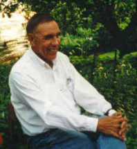

People  Andrei
Fedorovich Krupnov Andrei
Fedorovich Krupnov
Professor Andrei Fedorovich Krupnov
E-mail: kru@appl.sci-nnov.ru
Tel: +7 (831) 436-60-22
|  |
Andrei F. Krupnov was born 31.01.34; graduated from Gorky State University
in 1957; Ph.D at Gorky university 1965; D.Sc. Lebedev Physical Institute, Moscow
1975. He is Professor in Physics.
From 1977 to 2005 - head of
Microwave Spectroscopy Department at the Applied
Physics Institute of the Russian
Academy of Sciences. Current position - General
Research Associate.
Scientific Awards: 1980 - State Prize of the USSR in Science "For Development of Submillimeterwave Spectroscopy Based on Backward Wave Oscillators", 1982 - Joint Prize of the USSR and CSSR Academies of Sciences "For Investigation of Fine Structure of Rotational - Vibrational Spectra of Nonrigid Molecules".
|
From 1976 to 2009 – Member of Editorial Advisory Board of the Journal
of Molecular Spectroscopy, Elsevier Inc. (formerly Academic Press), USA.
Early results in beam masers: ring state separator, beam spectrometer with
240 Hz resolution, millimeterwave H2CO maser oscillator. Recent results in
new
technique of submillimeter microwave spectroscopy: spectrometer with backward
wave oscillators (BWOs) and acoustical detector (RAD), submillimeter BWO's
phase lock-in system, millimeterwave and submillimeterwave frequency synthesizers,
precise broadband Terahertz spectrometer (jointly with Cologne University),
extension of the range of microwave spectroscopy up to 1.5 THz by BWO frequency
multiplication, modern millimeterwave resonator spectroscopy, fast broadband
frequency synthesizers in millimeter and submillimeter bands. Applications
of technique developed to the molecular spectra studies and precise measurements
in submillimeter wave range. Publications: books: co-author of Molecular Spectroscopy:
Modern Research, Academic Press, 1976; Modern Aspects of Microwave Spectroscopy,
Academic Press, 1979.
Papers: total number 170.
|